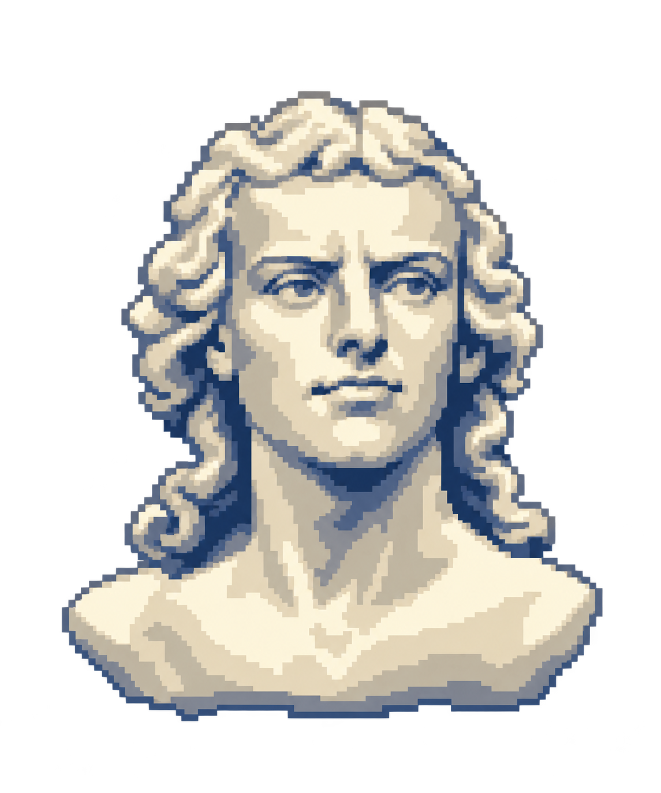

CARLETON COLLEGE
NEW STUDENT · 10
QUIRKY · 15
CUM LAUDE · 30
MAGNA CUM LAUDE · 60
SUMMA CUM LAUDE · 85
CARILLIONAIRE · 100

C
A
R
I
L
LION
THE DAILY DIVE
7 prompts · 25 seconds each · rarer answers sink deeper
♆
DEPTH
0m
SURFACE
SCORE
0
☰
◖))
⚙
DIVE MENU
Daily dive
Settings
DEPTH
0m
PROMPT 1 OF 7
SCORE
0
PROMPT 1 OF 7
▼ rarer answers sink deeper ▼
DESCENDING…
25
DIVE
DESCEND ▼
CARILLION
DAILY DIVE COMPLETE
0
0m
YOUR SCORE · OUT OF THE CURATED SET MAXIMUM
0 / 700 points
THE BEARING
0–150m
New Student
151–250m
Cum Laude
251–350m
Rare
351–449m
Summa Cum Laude
450m+
Carillionaire
THE CATCH · TAP A ROUND FOR EVERY ANSWER
DIVE AGAIN
▸ HOW TO PLAY
Privacy
▼ BEGIN DESCENT ▼
DIVE # 74
×